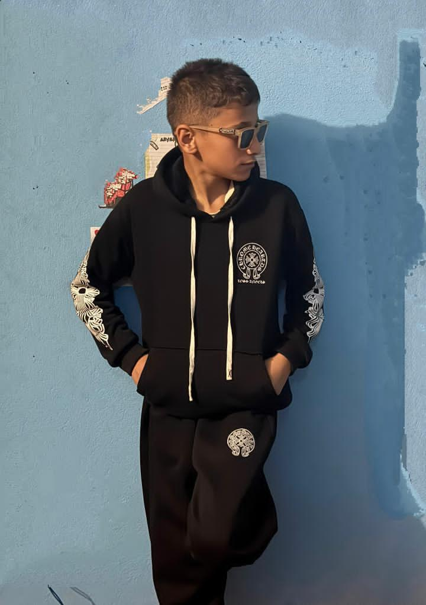

Diyan Sharma is a hardworking and honest student of New Rising English Secondary School. At just 14 years old, he has shown great dedication, discipline, and sincerity towards his studies and daily life. Diyan is known among his teachers and friends for his humble nature, positive attitude, and helpful behavior. He actively participates in school activities and always gives his best in everything he does, making him a role model for his classmates.
Diyan has a clear dream of becoming a successful Software Engineer in the future. His curiosity about technology and how computers work drives him to learn new things every day. He is determined to work hard and achieve his goals, and he is grateful to have the full support of his loving family. Their constant encouragement motivates him to keep pushing forward, and with his honesty, dedication, and family support, Diyan is on the right path towards a bright future.